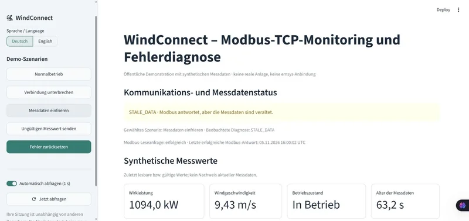

Wind energy · Communication / INDEPENDENT PROJECT
Distinguishing connectivity from data freshness.
Simulate a wind turbine locally, transmit measurements over Modbus TCP, and diagnose reproducible communication faults.
Code & documentation ↗
Local demo: installation and two-terminal startup are documented in the repository. No publicly hosted live application.


Enlarge chart ↗
01 / MY CONTRIBUTION
Implementation
- Built a deterministic 3 MW simulator, a versioned holding-register map, and a separate Modbus polling client.
- Implemented connection loss, frozen data, and invalid values with explicit fault priority, recovery, and deduplicated event logging.
- Connected a German Streamlit dashboard through atomic local state files, keeping services independent of UI reruns.
02 / METHODOLOGY
Data and approach
- Synthetic power, wind speed, operating state, UTC sample time, and sequence counter with a simple bounded power curve.
- Twelve 16-bit holding registers, big-endian word order, and scaled integers; real TCP traffic restricted to 127.0.0.1.
- Priority: CONNECTION_LOST, INVALID_MEASUREMENT, STALE_DATA, HEALTHY. Sequence and sample time must advance; default stale threshold is 5 seconds.
- Verified on Windows/Python 3.13.15 using unit tests, real TCP integration tests, Streamlit AppTests, Ruff, a fresh installation, and a browser demo.
03 / RESULT
Results in context
60 automated tests passed; all four diagnostic states and recovery were also verified in a local subprocess smoke test.
| Automated tests | 60 |
|---|---|
| Diagnostic states | 4 |
| Default stale threshold | 5 s |
| Modbus endpoint | 127.0.0.1:15020 |
The subprocess smoke test observed HEALTHY → STALE_DATA → HEALTHY → CONNECTION_LOST → HEALTHY → INVALID_MEASUREMENT → HEALTHY, three RECOVERED events, exit code 0, and a released Modbus port. A successful TCP contact alone is not treated as proof of fresh measurements.